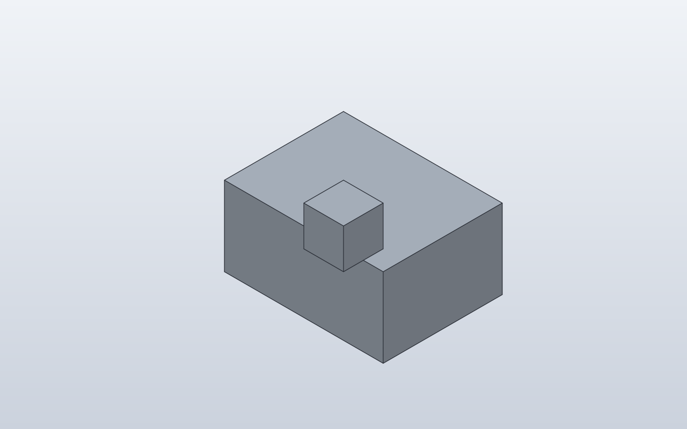

← Qualification / Editable local offset at an attachment
Forge qualification case · PASS · Q1 Q2 Q3 Q4 Q5 Q6
Editable local offset at an attachment
Verify the existing local (u,v) attachment-plane offset and make its coordinate semantics explicit.

1. Forge contract
Public API
attach(..., offset=(u, v))
Internal Forge model
Attachment stores two symbolic local planar values; these are not world X/Y/Z coordinates.
SolidCraft lowering
A non-zero/symbolic local offset becomes joint.create(type='planar', values=[u,v,angle]).
2. Native verification
Expected result
The marker moves within the selected corner anchor's local attachment plane.
Parametric mutation
Change shift from 5 to 10 mm in the saved design; the marker must follow the same local axis by another 5 mm.
Evidence

3. Results
shift 10 · 2 bodies · measurements-shift-10.json
Parameters
| Name | Value |
|---|---|
shift | 10.0 |
Bodies
| Body | BBox min | BBox max |
|---|---|---|
| Base | [-20, -15, 0] | [20, 15, 20] |
| Marker | [10, -25, 30] | [20, -15, 40] |
Baseline · 2 bodies · measurements.json
Parameters
| Name | Value |
|---|---|
shift | 5.0 |
Bodies
| Body | BBox min | BBox max |
|---|---|---|
| Base | [-20, -15, 0] | [20, 15, 20] |
| Marker | [10, -25, 25] | [20, -15, 35] |
4. Generated native relationship/command path
[
{
"command": "joint.create",
"params": {
"type": "planar",
"name": "Attach Marker:1 to Base:1",
"a": {
"occurrence": "Base:1",
"edge": [
20.0,
-15.0,
10.0
],
"on": [
0.0,
-15.0,
10.0
],
"corner": [
20.0,
-15.0,
20.0
]
},
"b": {
"occurrence": "Marker:1",
"edge": [
20.0,
-15.0,
15.0
],
"on": [
15.0,
-15.0,
15.0
],
"corner": [
20.0,
-15.0,
20.0
]
},
"values": [
0,
"-(shift)",
0.0
]
}
}
]5. Reference models
These comparisons clarify concepts; Forge does not promise API compatibility with them.
6. Fixture source
class Base:
def build(self):
return Box(40, 30, 20)
class Marker:
def build(self):
return Box(10, 10, 10)
class ParametricOffset:
shift = 5.0
def build(self):
base = Base()
marker = Marker().attach(
base,
parent=Anchor.FRONT_TOP_RIGHT,
child=Anchor.BACK_TOP_RIGHT,
offset=(0, -self.shift),
)
return base + marker
ParametricOffset()